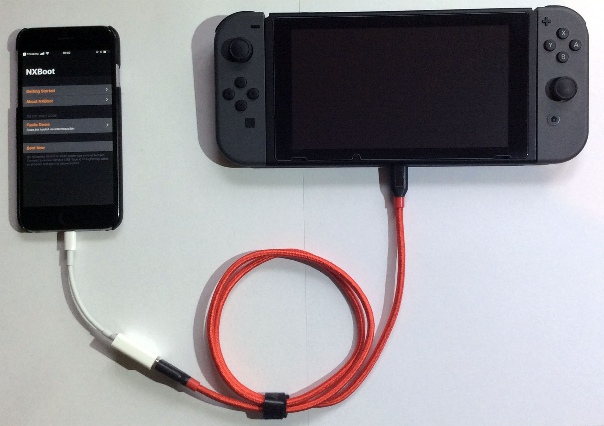

NXBoot enables starting custom boot code on the Nintendo Switch through the Fusée Gelée hardware exploit. Booting Coreboot/Linux is supported.
A jailbreak is required. For jailbreaking info visit canijailbreak.com and /r/jailbreak. Please keep in mind that a jailbreak is detrimental to your mobile device's security and you should never jailbreak a device that stores sensitive data. Currently the minimum supported iOS version is iOS 10.0.
NXBoot is currently in semi-public beta. The adventurous are invited to test it by contacting me via email.
What are the iOS hardware requirements?
An OTG adapter on the Lightning end of the connection is required. Setup example: An iPhone 6 with NXBoot, connected to an Apple Lightning USB 2 Camera Adapter, where a standard USB 3 Type A to Type C cable connects the adapter with the Nintendo Switch:

Does it work without a Lightning OTG adapter?
Nope.
Can you make it work without an Lightning OTG adapter?
Maybe, probably not. Send me a PoC and I'll build it in (or tell me why exactly it's technically not possible.)
Will cheap, non-Apple OTG adapters work?
Maybe. I don't keep a list and neither do I own any.
Why use your app at all if it requires a $35 adapter?
Because you've already got that adapter, or find it convenient, or found a cheap third-party adapter.
iOS software requirements?
You tell me! At the time of this public beta release NXBoot was only tested on iOS 11.3.1 with Coolstar's Electra Jailbreak. It may work on iOS 10 and later.
Nintendo Switch requirements?
Any first generation Nintendo Switch with any firmware will work. There are reports about patched Nintendo Switch hardware on which the exploit no longer runs, but any switch purchased before 2018-07 should be safe.
Is this app free?
Yes and there are no ads. It was created as a fun experiment.
Is it open-source / free software?
No, not yet. I usually release source code a few months after the initial release to avoid user base fragmentation. (No obligation under the GPL to release this app's source code exists - it was developed from scratch with no dependencies.)
Can I pay anyway?
How nice of you! <3 I've got a public Amazon Wishlist - maybe you find something there that's in the price range you have in mind. Thanks. Please understand that sending a gift creates no obligation on my part to create a feature or support you with an issue with this app.
If you've got a business inquiry please contact me at any time at my business email in the footer of my blog. I solve challenging programming, reverse engineering and security problems, develop embedded software, high performance network applications and iOS mobile apps at my company Softwific.
2018 - Oliver Kuckertz
{kind=link}